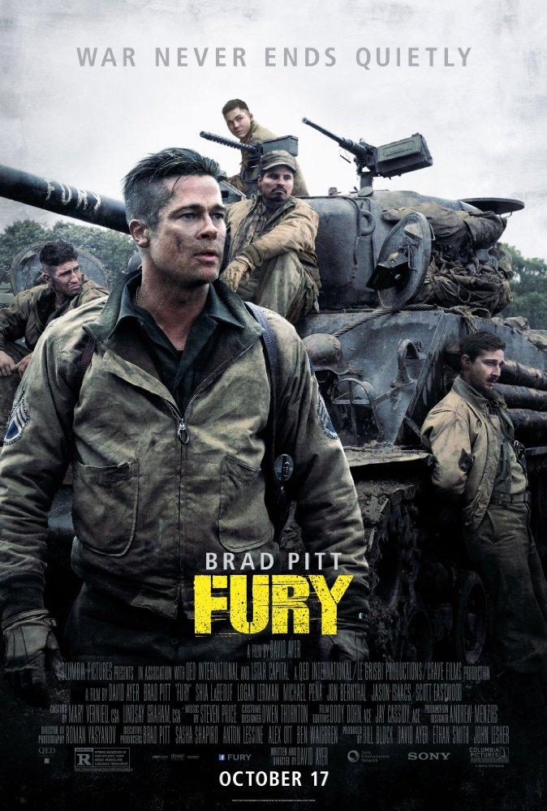

My favourite movies

- Title: TAKEN
- Genre: Action, Crime, Thriller
- Release Date: 18 September 2008
- Description: A retired CIA agent travels across Europe and relies on his old skills to save his estranged daughter, who has been kidnapped while on a trip to Paris.
- Title: DEFIANCE
- Genre: Action, Drama, History
- Release Date: 16 January 2009
- Description: Jewish brothers in Nazi-occupied Eastern Europe escape into the Belarussian forests, where they join Russian resistance fighters, and endeavor to build a village, in order to protect themselves and about one thousand Jewish non-combatants.

- Title: FURY
- Genre: Action, Drama, War
- Release Date: 30 October 2014
- Description: A grizzled tank commander makes tough decisions as he and his crew fight their way across Germany in April, 1945.
- Title: YIP MAN
- Genre: Action, Biography, Drama
- Release Date: 12 December 2008
- Description: During the Japanese invasion of 1937, when a wealthy martial artist is forced to leave his home and work to support his family, he reluctantly agrees to train others in the art of Wing Chun for self-defense.
HOME